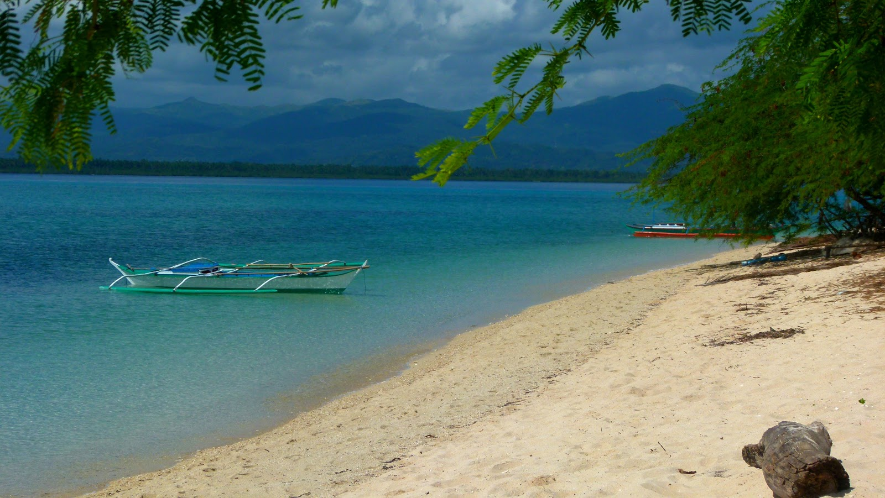
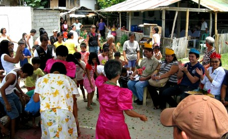
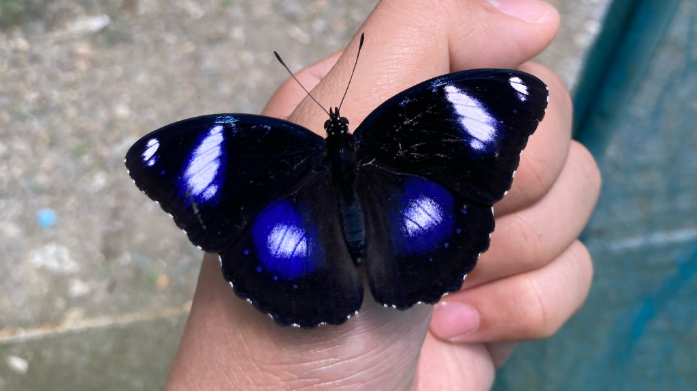

Five compelling reasons why this small, heart-shaped island delivers one of the most extraordinary travel experiences in the Philippines.
"Marinduque does not announce itself. It does not have an airport full of package tourists or a promenade of chain restaurants. What it has is something rarer — a living culture, an unhurried pace, and the kind of genuine warmth that makes you feel, before you have even finished unpacking, that you have arrived somewhere that actually wants you there." — A traveler's reflection on the island
The Moriones Festival is not staged for tourists — it is a genuine act of faith and community that has been practiced for centuries. When you watch a Morion sprint through the streets of Boac on Easter Sunday, you are not watching a performance; you are witnessing a tradition that is as alive and urgent as it was the day it began.
This authenticity extends beyond the festival. The Putong ceremony, the artisanal crafts, the barangay fiestas — all of these are real, active expressions of a culture that has not been sanitized or packaged for outside consumption. Marinduque invites you to witness real life, not a simulation of it.

Marinduque has not been overrun by mass tourism. Its beaches — Maniwaya, Poctoy, Santa Cruz — remain genuinely uncrowded destinations where you can spend an entire afternoon on white sand without battling for space or dealing with vendors every five minutes.
This is increasingly rare in the Philippines. While Boracay fills with thousands of visitors daily and El Nido's beaches require advance booking months out, Marinduque's shores remain accessible, peaceful, and pristine. The island's relative inaccessibility (there are no direct international flights) is precisely what preserves this quality. For travelers willing to make the journey, the reward is a Philippines that feels like it did a generation ago.
Manakla — freshwater crustaceans unique to Marinduque's rivers — cannot be found anywhere else in the Philippines. Uraro cookies made by the same family using the same recipe for three generations cannot be approximated by mass production. Tuba drawn from the coconut palms at sunrise carries a freshness that bottled versions never capture.
Marinduque's food culture is one of its most underrated assets. The island produces an extraordinary diversity of artisanal foods — patis fish sauce, lambanog coconut spirits, organic arrowroot flour, freshwater fish — using methods that predate industrialization. Eating here is an act of preservation as much as pleasure.
The Luzon Datum of 1911 on a hilltop in Boac is the point from which all Philippine maps were drawn — an extraordinary fact hiding in plain sight on a quiet island. The Boac Cathedral's fortress walls were built to repel pirate raids. The Bathala Caves hold evidence of human habitation stretching back thousands of years before written history.
For travelers who find meaning in place and want to understand the layers beneath a landscape, Marinduque rewards curiosity consistently. Its history is not sealed behind museum glass — it is embedded in the living architecture, the festival traditions, and the daily rhythms of a community that has inhabited the same land for millennia.

Filipino hospitality is famous — but Marinduque's version has a ritual formality that elevates it. The Putong ceremony, in which the community gathers to crown a visitor with a woven palm headpiece while singing ancient verses of welcome, transforms the ordinary act of arrival into something genuinely moving.
Beyond the ceremony, Marinduquenos are simply warm. Locals will invite a stranger to sit at their table, share what they have, and send you away with more uraro than you can carry. The island's communities have not yet been hardened by decades of high-volume tourism — they still engage with visitors as people, not as sources of income. This, more than any particular destination, is what most visitors remember longest.

Mount Malindig's cloud forest does not have a zip-line bisecting it. Bathala Cave does not have a gift shop at its entrance. Maniwaya Beach does not have a jet ski rental. Marinduque's natural attractions remain in their natural state — approached on foot, by boat, or by habal-habal, with a local guide who knows the land and shares its stories.
This is the kind of nature travel that has largely disappeared from more developed Philippine destinations. The island's status as the Butterfly Capital of the Philippines — supplying 85% of the country's butterfly exports — speaks to the health of its ecosystems. For travelers who value wilderness over amenity, Marinduque offers something genuinely rare.
Whether you're coming for Holy Week, a quiet beach escape, or simply because a heart-shaped island at the center of the Philippines sounds like exactly the right place to be — we'd love to help you plan it.